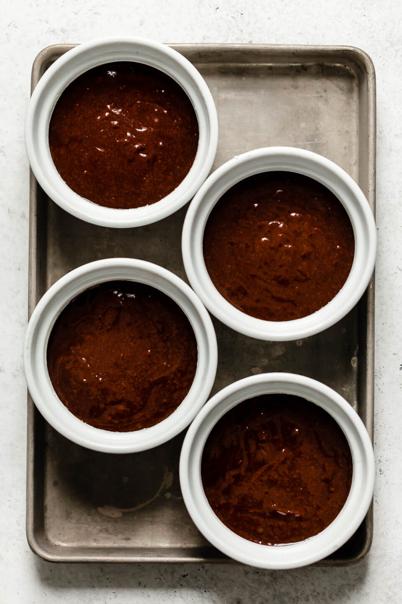

This dish is very popular being served mostly everywhere it seems. And its quick to make, and doesn't require many ingredients!
There isnt any doubt that you will love this, with a firm cake wall on the outside and a nice rich syrupy insides. and its easy to add some toppings too!
6 ounces of bitter sweet chocolate, chopped around 1 cup and 1 1/2 tablespoons
1/2 cup or 4 ounces of unsalted butter, cubed (not including buttering pans so have extra!)
2 large eggs, room temp.
2 large egg yolk, room temp.
1/4 cup of sugar
1/4 teaspoon of kosher salt
2 tablespoons of all-purpose flour, plus more for dusting ramekins
get the stuff
preheat oven to 450F butter and lightly flower four 6 ounce ramekins. Tap out excess flour.Set the ramekins on the baking sheet.
fill a medium saucepan with water to about 1 inch. bring to a boil over medium-high,then reduce to medium-low to maintain a simmer.Then you combine the chocolate and the butter in a heatproof medium sized bowl that is heatproof make sure the bottom of the bowl doesnt touch the water
cook over medium-low, stirring sparingly and adjusting the heat as needed to maintain a simmer, until chocolate mixture is melted and smooth 16-20 minutes.Remove from heat,and set aside.
Beat eggs, eggyolks,sugar,and salt in a medium sized bowl. use and eletric mixer on high speed until thick and pale. Around 2-3 minutes
Whisk melted chocolate until its smooth
Quickly fold melted chocolate mixture and flour into egg mixture in bowl until well combined and no streaks remain.
Spoon batter evenly into prepared ramekins (about 1/2 cup per ramekin);smooth up using a small offset spatula
Remove th caked from the oven and let them cool for 1 minute working with 1 ramekin at a time , cover a ramekin with an inverted dessert plate. Carefully turn over, and let stand 10 seconds before lifting the ramekin to unmold the cake repeat unmolding with the rest of the cakes. serve
well thats it enjoy and this is where i got the recipe
Go Home or Cheack out more